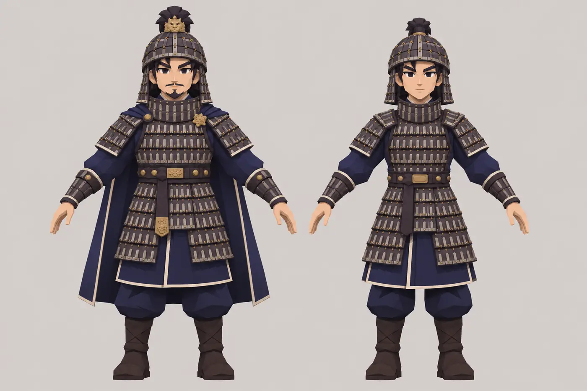
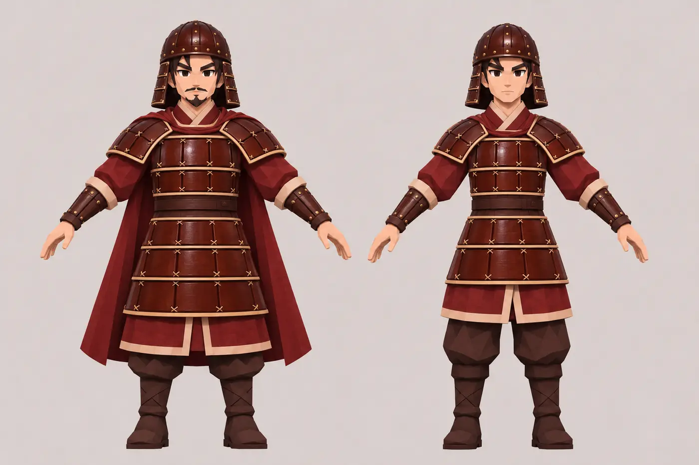
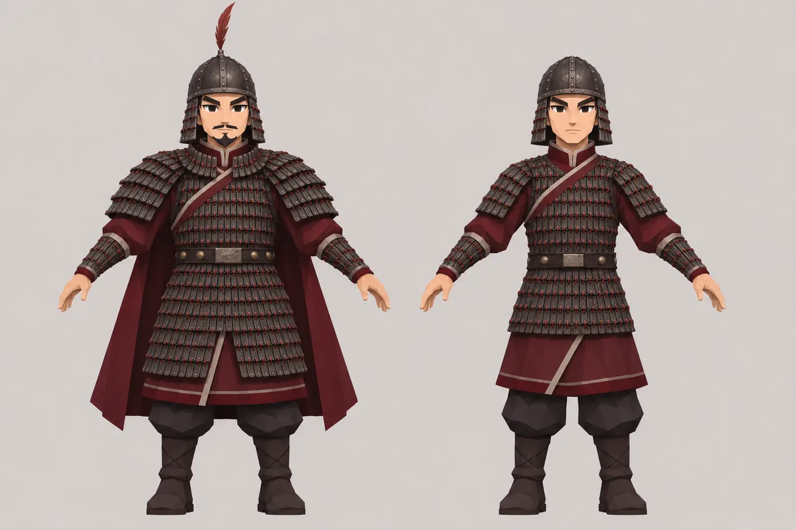
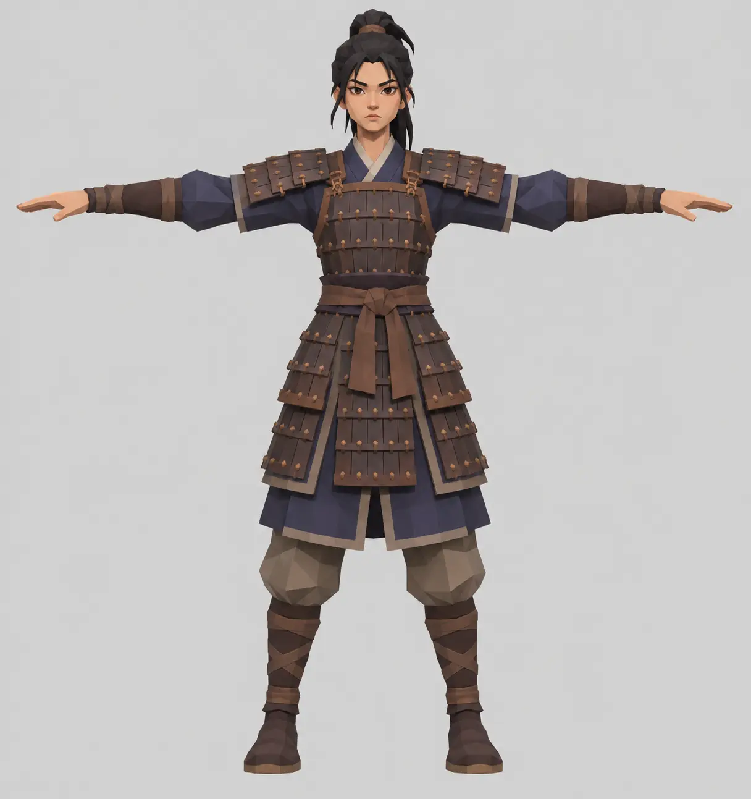
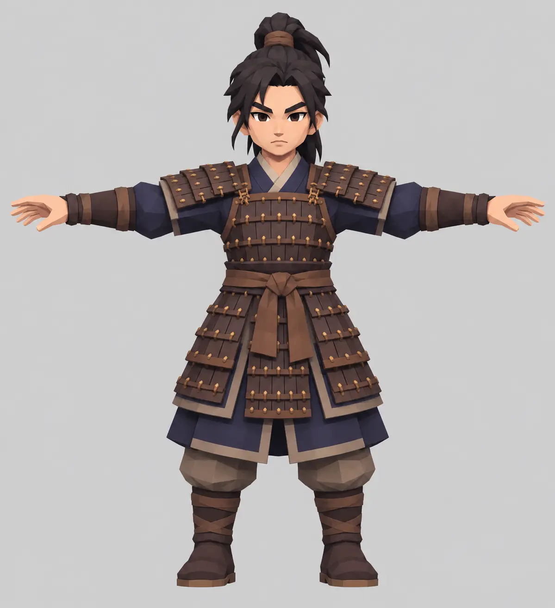
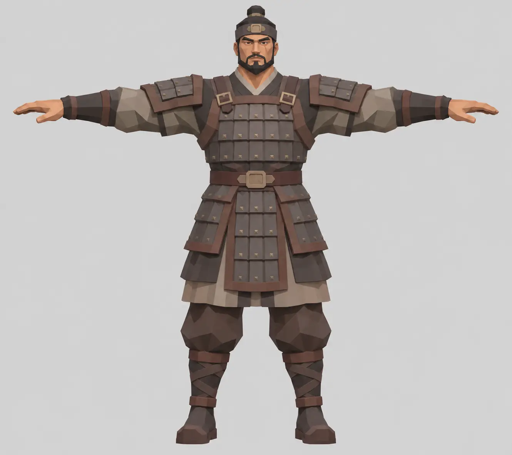
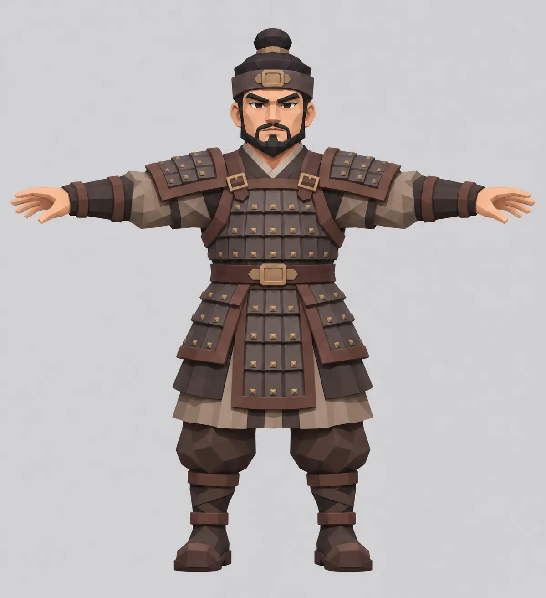

영웅 세 명, 각각의 명령
초기 1명으로 시작해 슬롯을 순서대로 연다. 플레이어가 선택한 영웅은 누구든 자유롭게 움직일 수 있다. 영웅별로 자동 이동과 자동 기술을 각각 켜고 끈다.
- 기본 공격은 사거리와 대상 조건에 따라 자동.
- 직접 이동 입력이 있는 동안 선택한 영웅에게 우선 적용.
- 이동 수동인 다른 영웅은 제자리에 머무르며 사거리 내 적을 공격.
- 선택 영웅 전투불능 시 생존 영웅으로 전환 가능.
A KINGDOM · MANY HEROES · NINE CHAPTERS
영웅을 편성하고, 방어선을 지키거나 군대를 이끌고 적진을 돌파한다. 인물의 성장부터 스테이지와 모델 제작까지 연결한 게임 매뉴얼.
READ THIS FIRST
이 매뉴얼은 기존 대본과 플레이 가능한 시제품을 출발점으로 삼고, 이후 대화에서 결정한 영웅별 자유 이동·최대 3명 편성·자동/수동 설정·공성 자동 진군을 우선 반영한다.
피해·시간·등급과 웨이브 수치는 플레이 테스트 전의 제안값이다. 기존 작품의 이미지와 초기 시안은 제품에 반영된 완성 모델이 아니다.
01 / BATTLE
보유 영웅 1~3명과 병종을 선택한다.
영웅을 전환하며 직접 이동하거나 자동 운용한다.
자동 공격과 기술, 아군 증원으로 위협에 대응한다.
경험치와 금화를 쓰고 임무 결과를 확인한다.
초기 1명으로 시작해 슬롯을 순서대로 연다. 플레이어가 선택한 영웅은 누구든 자유롭게 움직일 수 있다. 영웅별로 자동 이동과 자동 기술을 각각 켜고 끈다.
수성에서는 성벽 궁병이 자동 사격하고 영웅이 위협을 막는다. 공성에서는 전투 전에 고른 부대가 자동 진군하고 플레이어가 재화를 써서 추가 출격한다.
성문에 닿는 즉시 피해를 주기보다 준비 동작과 저지 기회를 둔다. 구역 진입·목표 확보·방어선 돌파·다음 구역 개방의 조건은 스테이지별로 다르다.
| 상황 | 동작 | 검증 포인트 |
|---|---|---|
| 자동 이동 중 직접 명령 | 입력이 우선한다. 마지막 입력에서 2초 후 자동 이동이 켜져 있으면 복귀한다. | 반복 입력과 경로 실패에서 떨림이 없는가 |
| 자동 기술과 수동 명령이 겹침 | 같은 프레임에 수동 입력을 먼저 처리하고, 성공한 사용만 재사용 대기시간을 시작한다. | 한 기술이 중복 발동하지 않는가 |
| 선택 영웅 전투불능 | 생존 편성 순서의 다음 영웅을 선택한다. 전원 불능은 10초 복귀 대기 후 부활 가능 여부를 판정한다. | 전원 불능과 보호 목표 파괴의 우선순위 |
| 화면 밖 영웅 | 자동 이동 영웅은 경로를 따라 합류한다. 수동 영웅은 위치를 유지하며 화면 가장자리에서 상태와 방향을 표시한다. | 거리 제한과 강·성문 경로 접근성 |
| 출격 불가 | 재화 부족, 병력 상한 또는 출격 대기시간이면 사유를 표시하고 재화를 차감하지 않는다. | 동시 입력에도 정원과 비용이 일관적인가 |
02 / PROGRESSION
영웅을 획득하고 레벨, 능력치, 기술을 성장시킨다. 무기·갑옷·말을 장착하고 3명과 병종을 편성한다. 등급은 C → B → A → S → SR의 도감 분류이며 실제 획득·승급 규칙은 검증 대상이다.
능력치 계산 제안: (기본값 + 장비 고정값) × (1 + 성장률 + 장비 비율). 사거리와 이동 속도는 별도 상한을 둔다.
처치와 임무 달성으로 경험치·금화를 얻는다. 경험치가 기준에 닿으면 전투를 정지하고 강화 3개 중 하나를 선택한다. 금화는 성벽 궁병과 편성 부대의 추가 출격에 사용한다.
시험 시작값: 금화 100, 성벽 궁병 추가 1명 50, 최대 12명. 추가 출격 비용은 병종표의 제안값. 초과 경험치는 이월한다.
| 장착 | 영향 | 기준 동작 / 검증 |
|---|---|---|
| 무기 | 공격력 · 속도 · 사거리 | 창/검/활의 공격 유형과 손 위치, 기술 호환 확인 |
| 갑옷 | 방어 · 최대 체력 | 무게로 인한 이동 손실은 장비별 제안; 진영별 형태 구분 |
| 말 | 이동 · 방어 · 기마 상태 | 기수·말 별도 모델과 기마 공격, 승·하마 연결 |
| 특수 장비 | 시야·사거리·상태 등 | 동일 종류 중복 시 높은 효과 1개만 적용하는 시험안 |
테스트 제안 1장 시작 시 슬롯 1개, 2장 완료 시 2개, 4장 완료 시 3개를 시험한다. 기존 대본의 사망·이탈과 재등장 문제는 스토리 편성과 보유 도감을 분리하여 검증한다.
기본 공격력 100·사거리 1의 영웅이 공격력 +20·사거리 +0.5 무기를 착용하고 성장률 10%를 얻으면 공격력 132, 사거리 1.5가 된다. 기본 체력 500·방어 20에 갑옷 체력 +100·방어 +10을 장착하면 성장 배율 적용 전 600·30이다. 말 이동속도 +20%·방어 +10은 기마 가능 영웅에만 적용하는 시험안이다.
무기 공격 속도는 공격 간격을 기본 간격 / (1 + 속도 증가율)로 계산한다. 기마 상태에서 창 전열에 충돌하면 속도 보너스보다 저지 판정이 먼저 적용되는지 시험한다. 장비 등급·재료·획득 판은 아직 미설계다.
등급·해금 시점·재화·공식은 사용자 확정 수치가 아니다. 적 장수도 동일한 능력치와 장비·기술 계산을 사용한다.
03 / SHARED SKILLS
각 영웅은 공용 기술 목록에서 기획상 배정된 두 가지를 가진다.
ARMOR RESEARCH / 삼국 갑옷
유물에서 확인되는 구조와 게임을 위한 창작을 구분한다. 아래는 7세기 군복의 완성 복원이 아니라 출토품을 바탕으로 한 조사다.
신라 포항 옥성리 철제 투구는 철판을 연결한 몸체와 볼가리개가 확인된다. 삼국시대 투구는 여러 형태가 존재하므로 한 가지로 단정할 수 없다. 박물관이 소개하는 차양주는 앞쪽에만 챙이 있는 투구다. 이번 게임 시안에서는 사방으로 넓게 퍼진 삿갓형 투구를 제외한다.
신라 옥성리 투구 · 국립경주박물관 (현재 접속 확인 필요) ↗ 고대 투구의 여러 형식 · 국립중앙박물관 ↗
| 진영 | 관찰 근거 | 장수·병사의 공통 디자인 제안 | 아직 미확정 |
|---|---|---|---|
| 신라 | 초당동 쇠비늘갑·목가리개, 옥성리 철판 투구·볼가리개 | 남청 옷감과 밝은 선, 연결한 철판과 끈 | 배색·7세기 적용 여부 |
| 백제 | 관북리 칠피갑편과 공산성 칠피갑·철제 찰갑 | 적갈 옷감, 옻칠한 가죽 질감의 갑옷 | 전체 형태·투구·색 |
| 고구려 | 광진구 철제 찰갑편과 고분벽화의 의복 | 먹빛 철판, 진홍 옷감과 가장자리 선 | 투구·색·시기별 차이 |
공통 구조가 나라별 독점 양식이라는 뜻은 아니다. 색상은 국가 군복의 실증이 아닌 게임 식별 제안이며 개인·병종별 차이를 추가한다. 복식 참고 · 한국학중앙연구원 ↗

확인: 철로 만든 비늘 조각을 가죽끈으로 연결한 몸통과 긴 철판 28개로 이뤄진 목가리개가 관찰된다. 사진의 붉은색은 부식된 현재 상태다.
시기 주의: 박물관은 함께 전시된 그릇을 4세기 후반 제사 풍습과 연결한다. 이 유물 하나로 7세기 전군의 갑옷을 확정하지 않는다.
디자인에 적용할 관찰: 겹친 작은 판, 끈의 연결, 목가리개 구조를 기준으로 검토한다. 완성 형태와 색은 추가 대조가 필요하다.
출처 · 국립춘천박물관 유물 설명과 사진 ↗확인: 사비기 왕궁 관련 유적에서 옻칠한 가죽 갑옷 조각이 출토됐다. 연구소는 출토 맥락과 재질 분석을 공개했다.
시기 주의: 폐기 유물과 탄 목재의 출토 맥락은 백제 멸망 무렵의 상황을 검토할 자료다. 조각만으로 착용한 전체 갑옷, 투구, 군복 색을 복원할 수는 없다.
디자인에 적용할 관찰: 가죽 판과 옻칠, 연결 구멍을 검토하되 실루엣과 배색은 별도 자료와 대조한다.
출처 · 국립부여문화유산연구소 발표 ↗
확인: 국립중앙박물관은 신수 28908을 고구려 철제 찰갑으로 분류한다. 작은 갑옷 조각으로 남아 있다.
시기 주의: 해당 소장품 설명에는 정확한 제작 연대나 원래 갑옷 전체의 모습이 기재되어 있지 않다.
디자인에 적용할 관찰: 작은 철판과 연결 구조를 관찰하고 고분벽화 등 다른 자료와 교차 검토한다. 고구려만 찰갑을 쓴 것으로 취급하지 않는다.
출처 · 국립중앙박물관 소장품 신수 28908 ↗판을 이어 만든 갑옷과 작은 판을 연결한 비늘 갑옷은 시대에 따라 변했다. 신라 갑옷에도 비늘 구조가 있으므로 ‘신라는 판갑, 고구려는 찰갑’처럼 국가별로 하나씩 배정하지 않는다. 같은 국가 안에서도 시기·신분·지역·병종을 나누어 비교한다.
말갑옷도 고구려만의 특징으로 단정할 수 없다. 신라와 백제 지역 출토품을 함께 비교한다. 사람 갑옷과 말갑옷 역시 별개 유물로 기록한다.
국립중앙박물관 · 갑옷의 시대별 변천 ↗ 국립경주박물관 · 말갑옷 비교 전시 ↗ 유물·한계·적용 기준 조사표 ↗
아래 도형과 색상은 게임 식별을 위한 임의 제안이며 역사적 국가 문양이나 갑옷의 복원이 아니다. 기존 시안은 비교를 위해 보존한다.
대본상 김인문은 신라 인물이지만 당 갑옷을 입는다. 고연무와 상영의 소속 변화와 착장도 별도로 확인한다.
CHARACTER ART DIRECTION / V6
스타일리시 + 카툰 + 로우폴리 기준의 이미지 시안이다. 인물마다 머리·몸통·팔다리 비율이 달라 공통 기준체에 맞춘 3D 보정이 필요하다.
아래는 개인 문장과 머리 장식을 적용한 단독 T포즈 시안이다. 이미지 비율은 아직 서로 같지 않다. 갑옷 고증과 배우 유사성은 완료되지 않았다. 이미지를 누르면 확대할 수 있다. 배우 유사성·복식과 실제 모델 리깅은 별도 검증이 필요하다.
PREVIOUS FACTION STUDIES / V4
위 유물·복식 조사에서 출발한 시안이다. 세 나라 모두 머리에 밀착된 투구를 선택하고 사방으로 넓은 삿갓형은 제외했다. 천 색과 장식은 게임 식별을 위한 창작이며, 투구는 특히 백제·고구려 7세기 실물 대조가 남아 있다. 이 비교 그림은 개별 T포즈나 고증 완료품은 아니다.



이 페이지에는 주요 인물 13명의 비교 시안이 있습니다. 전체 영웅 시안 보기 →
용·주작 등의 문장은 게임을 위한 개인 창작 표식이다. 앞·뒤가 같은지, 손과 장비 분리 및 소형 화면 식별이 가능한지 개별 검수해야 한다. 문장·투구 배정표 ↗
얼굴의 선과 표정을 간소화하고 해상도는 유지한다. 투구가 없는 궁병은 천 두건을 비교한다. 무기·말·방패는 별도 자산이며 개인 문장은 영웅에게만 부여한다.
병사 네 명은 진영별 초기 시안이다. 무기·방패는 별도 제작 대상이며 복식 고증은 필요하다.
이전 이미지는 보존되어 있다. 아래는 비율과 얼굴 표현을 확인하기 위한 시안 비교다.




04 / HERO ARCHIVE
실제 기획 자료에 있는 인물부터 정리했다. 법민과 문무왕은 동일 인물의 시기별 외형이며 동시 편성하지 않는 방향을 제안한다. 등급·기술 조합은 제안이며 드라마 배역 미확인자는 추정하지 않는다.
대본에 등장한 인물을 인덱싱했다. 플레이어블 영웅 여부와 등급은 아직 확정되지 않았다.
05 / FACTIONS
| 병종 | 강점 | 약점 | 출격비 | 거리 |
|---|
실제 측정치가 아닌 초기 밸런스 시험값. 1거리는 영웅 한 명 폭을 기준으로 조정한다.
| 병종 | 체력 / 방어 | 공격 / 주기 | 속도 | 출격 대기 / 상한 |
|---|---|---|---|---|
| 방패병 | 180 / 25 | 20 / 1.5초 | 0.8 | 8초 / 12명 |
| 창병 | 120 / 10 | 28 / 1.8초 | 1.0 | 7초 / 12명 |
| 검병 | 135 / 12 | 26 / 1.2초 | 1.1 | 6초 / 12명 |
| 기병 | 220 / 20 | 40 / 1.8초 | 1.8 | 14초 / 6명 |
| 궁병 | 75 / 3 | 22 / 1.6초 | 1.0 | 8초 / 12명 |
| 공성병 | 200 / 10 | 구조물 50 / 2.5초 | 0.6 | 15초 / 4명 |
창병은 1거리 안쪽의 적에게 피해 0.7배, 궁병은 2거리 이내 공격 불가를 시험한다. 기병 돌격은 2거리 이상 직선 가속 후 적용되며 창 정면에 부딪히면 저지된다. 실제 충돌 판정과 벽·수로 지형에 따라 수치를 조정한다.
거리 1·2·3은 이동을 격자에 고정하지 않는 연속 월드 거리의 구간이다. 피해 배율 제안: 유리 ×1.35, 불리 ×0.70, 방패 정면 원거리 ×0.40. 실제 모션·사거리로 재검증한다.
06 / CAMPAIGN
36개 대본 전투를 모두 찾아볼 수 있다. 웨이브 구성은 시험용 초안이며 대본의 실제 사건과 분리해 표시한다.
07 / ASSET PIPELINE
대상별 개별 이미지와 Meshy 모델을 추적한다. 미제작 이미지를 다른 인물의 모델 입력 이미지로 표시하지 않는다.
T포즈 기준 이미지 → 공통 기준체 시험 → Meshy 모델과 토폴로지 → 리깅 → 대기·이동·공격·피격·사망·기술 2개 → 내보내기와 실기기 검수. 무기와 말은 별도 장착 관계를 확인한다.
스테이지 구역 배경·길·강·산·성벽을 레이어로 분리하고, 편성·영웅 전환·자동 설정·성장·출격 UI와 화공·수공 등 효과를 제작한다.
| ID / 대상 | 방식 | 입력·시안 | 동작 / 용도 | 상태 |
|---|
08 / RESEARCH
KBS와 경주시 공개 자료에서 김법민 이현욱, 김유신 박성웅, 김춘추 김강우, 김진주 정웅인 배역을 확인했다. 기존·생성 시안은 배우 얼굴을 검증한 이미지가 아니며, 실제 배우 참고와 유사성 검토가 별도로 필요하다.
KBS 드라마 공식 자료 ↗국립김해박물관은 삼국의 갑옷 특성과 복원상의 불확실성을 함께 소개한다. 특정 군대의 색이나 능력치를 유물만으로 확정하지 않는다.
국립김해박물관 갑옷 전시 ↗국사편찬위원회 한국사 DB의 전쟁 연표는 655년 신라 북경 33성 함락을 기록한다. 3-3의 출발점으로 대조할 수 있으나 인물 대사와 플레이 목표는 대본과 기획의 영역이다.
국사편찬위원회 삼국의 전쟁 연표 ↗인간형 리깅과 동작 라이브러리를 먼저 시험한다. 무기 모델·손 부착점·양손 접점·활시위·명중은 실제 적용 검수가 필요하다. 말과 기마는 별도 시험한다.
무기·동작 제작 기준 ↗9장 36판 대사, Unity 아트 명세, 최신 전투 변경안, 기존 HTML 시제품을 사용했다. 드라마 원문과 스토리 토대 문서 전체는 현재 묶음에서 확인되지 않았다.
09 / VALIDATION
1→2→3 슬롯·전환·자동 이동과 기술을 각각 시험.
잡병 자동 처리와 공성 위협 개입을 비교.
산·강·성 구역을 자동 진군과 추가 출격으로 돌파.
정면·측면 실루엣과 각 행동의 모델·애니메이션 검수.
1-1의 동문 대피와 5·6웨이브 대본을 바탕으로 한다. 초안에서 방어 시간과 민간인 대피를 플레이 목표로 두고, 전투 종료 후 원본 대사의 성 함락 결말을 별도로 보여준다. 성문 체력과 대피 인원·시간은 테스트 미정이다.
확인: 궁병 자동 사격 → 영웅 직접 이동과 기술 → 동문 개방 → 적 진입로 변화 → 대피 성공과 대본 결과의 관계.
5-2의 겨울 나루와 군량 수레를 바탕으로 호위 임무를 제안한다. 수레가 도착한 구역에서 적을 제거해야 하는지, 다리나 길만 확보해도 진행하는지 검증한다. 수레 수량·적 습격·종착점은 미확정이다.
확인: 자동 진군 대형 → 강가 이동 지연 → 영웅 전환과 후방 호위 → 부대 추가 출격 → 생존 수레 판정.
현재 매뉴얼은 첫 통합 초안이다. 스토리별 수치·개별 모델 입력 이미지와 사료를 계속 연결하며 검증한다. Meshy 키는 사용하지 않았다.